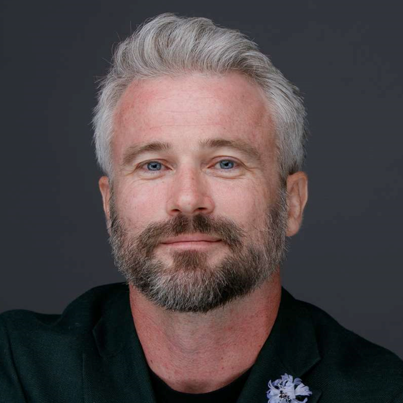

Promoting community health and scientific literacy by translating peer-reviewed research into clear, accessible information.
The Science and Freedom for Everyone Foundation is a non-partisan educational and scientific organization. Through the SAFE Research Institute, the Foundation reviews and synthesizes existing peer-reviewed research on public health and biomedical topics, then publishes plain-language reports, summaries, and white papers that are freely available to the general public.
The Foundation carries out its educational mission through three core activities. During its start-up period it runs on volunteer support, so each activity is also a way to get involved.
The Foundation reviews and synthesizes existing peer-reviewed scientific literature on public health and biomedical topics. Findings are compiled into reports, summaries, and white papers and published on the Institute's website, freely available to the public.
Who we need: Scientists, MDs, and data scientists.
Get Involved →The Foundation produces educational summaries, explainers, webinars, and presentations on scientific topics for non-specialist audiences. These activities are delivered online and, where requested, in person at libraries, schools, and community venues on a non-discriminatory basis.
Who we need: Educators, science communicators, and public health professionals.
Get Involved →The Foundation makes its educational materials freely available to the public and, on written request from a community organization, government body, regulator, or policymaker, prepares and delivers a research-based educational briefing on a specific scientific question. Briefings present facts, methodology, and the state of the scientific evidence. The Foundation does not recommend the adoption, modification, or rejection of any specific legislation, regulation, or policy proposal.
Who we need: Digital strategists, web developers, and communication specialists.
Get Involved →The volunteer onboarding process includes a brief application, a commitment overview, and signing of the Foundation's Code of Integrity. Applications are reviewed within five to seven business days.
Start Your ApplicationNot sure where you fit? Start the application and we'll help you find the right activity.
The gap between scientific research and public understanding continues to widen. The Science and Freedom for Everyone Foundation was established to close that gap by making complex scientific information accessible to anyone who wants to understand it. The Foundation's core audience is the general public. Educators, journalists, students, community organizations, and public officials are welcome to use the same materials, on the same terms, free of charge.
Reports, summaries, and white papers synthesizing peer-reviewed research on public health and biomedical topics.
Educational summaries, webinars, and public presentations that help people interpret scientific information they encounter in everyday life.
Research-based educational briefings provided to community organizations and public officials on request.
The Foundation is governed by a three-person Board of Directors. Each officer holds defined fiduciary responsibilities under California Nonprofit Public Benefit Corporation Law and the Foundation's bylaws.

Dr. Gregory M. Newkirk is a molecular biologist, science communicator, and the founder of Science and Freedom for Everyone (SAFE). He earned his Ph.D. studying the frontiers of molecular biology, with research spanning CRISPR/Cas9 gene editing, nanotechnology, and genomics, and his work has appeared in leading journals including Nature Nanotechnology and ACS Nano. He is also a named inventor on a granted U.S. patent for a nanoparticle-based method of delivering genetic material into plant cells. After years at the bench in both academic and industry laboratories, Dr. Newkirk turned his attention to a growing challenge of our time: the erosion of public trust in science. Drawing on his credentials as a working scientist, he now engages directly with skeptics, deniers, and the simply curious in live, open debates, meeting people where they are and modeling how evidence and honest inquiry actually work. He founded SAFE to carry that mission further, educating the public and policymakers about how science-based policy can improve quality of life and building a community dedicated to defending scientific integrity, protecting the freedom to ask questions, and ensuring that accurate, trustworthy science remains accessible to everyone.
Oversees the Foundation's strategic direction, presides at meetings of the Board, and serves as the principal external representative of the Foundation.
Kristen McCracken serves as Chief Financial Officer and a member of the Board of Directors of Science and Freedom for Everyone. In this role, she oversees the organization's financial management, including budgeting, financial reporting, and the development of policies that support transparency, accountability, and long-term sustainability. Kristen has a strong background in nonprofit operations and organizational leadership. She holds a certification in Nonprofit Management from Southern Methodist University, where she gained formal training in governance, financial stewardship, and strategic planning for mission-driven organizations. As CFO, Kristen works closely with fellow board members to ensure responsible financial oversight and alignment between the organization's resources and its mission. Her approach emphasizes sound fiscal practices, ethical governance, and building a stable foundation for growth and impact. In addition to her role with Science and Freedom for Everyone, Kristen also serves as a director of another nonprofit organization, where she contributes to organizational governance, strategic planning, and mission-focused leadership. She is committed to strengthening nonprofit organizations through sound financial stewardship and effective governance.
Oversees the Foundation's financial condition, maintains books and records of account, prepares the annual budget, and oversees timely federal and state tax filings.
Michele De Socio has over 20 years of experience in nonprofit financial leadership, having served as Chief Financial Officer of a private nonprofit social service agency and federally qualified health center, where she was responsible for financial oversight and regulatory compliance.
Now retired, she serves as Secretary of the Board of the Science and Freedom for Everyone Foundation (SAFE), contributing expertise in governance and organizational oversight to support the Foundation's mission of advancing public education and promoting scientific integrity. She has also served on the boards of other nonprofit organizations and volunteers her time assisting emerging nonprofit organizations with startup guidance, compliance, and regulatory requirements.
Maintains the Foundation's corporate records, records minutes of Board meetings, and oversees the Foundation's compliance calendar and conflict-of-interest disclosures.
The Scientific Advisory Board is a standing advisory body of volunteer experts in microbiology, clinical medicine, data science, public health, and related fields. It exercises no governance authority. Its role is to review draft publications for methodological soundness, flag and manage author or reviewer conflicts of interest, and recommend publication standards to the Board. Members serve uncompensated. Recruitment is ongoing, and members will be announced here as they are confirmed.
The Science and Freedom for Everyone Foundation operates as a non-partisan educational and scientific organization. The Foundation does not support, oppose, endorse, or contribute to any candidate for public office and does not engage in any form of electioneering.
The Foundation has elected the expenditure test under Section 501(h) of the Internal Revenue Code for any educational work that touches on legislative subjects. Substantially all Foundation work is nonpartisan educational analysis or technical assistance provided in response to written requests. The Foundation does not advocate for the adoption, modification, or rejection of any specific legislation, regulation, or policy proposal.
All Foundation work products are released to the public free of charge under open licenses, with the license chosen to fit each type of material: model policy documents are dedicated to the public domain under Creative Commons CC0 1.0; research reports, white papers, and educational materials are licensed under Creative Commons Attribution 4.0 (CC BY 4.0); and software is licensed under the GNU General Public License version 3.0 (GPL-3.0). The Foundation's names and logos are not covered by these licenses and remain reserved.
Access research publications, educational materials, and resources from the Foundation's three activities.
Systematic review and synthesis of peer-reviewed public health and biomedical research, reviewed and approved by the Scientific Advisory Board.
Educational webinars, presentations, and recorded seminars from the SAFE Research Institute community.
Reports, summaries, and white papers translating peer-reviewed research into clear, accessible information for the public.
Plain-language analyses of peer-reviewed public health and biomedical research, reviewed by the Foundation's Scientific Advisory Board.
The Foundation's research publication platform is currently under development. Check back soon for research reports, white papers, and educational briefs.
Educational webinars, public presentations, and recorded seminars from the SAFE Research Institute.
The Foundation's educational media platform is currently under development. Check back soon for webinars, presentations, and recorded seminars.